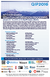
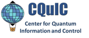
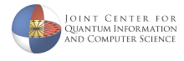
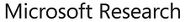
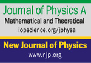
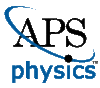
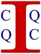

Banff Lake Louise Tourism / Paul Zizka Photography


QIP 2016 POSTER |
Sponsors |
|  |
|  |
|  |
Supporters |
|  |
|  |
Contributors |
|  |
The international annual Quantum Information Processing (QIP) series is the premier meeting for theoretical quantum information research. Since 1998, the conference has featured breakthroughs by the leaders in the disciplines of computing, cryptography, information theory, mathematics and physics. The scientific objective of the series is to gather the theoretical quantum information community to present and discuss the latest groundbreaking work in the field.
QIP 2016 is the nineteenth international conference on theoretical aspects of quantum computing, quantum cryptography, and quantum information in a series that started in Aarhus in 1998 and was last held in 2015 in Sydney. QIP 2016 will feature a tutorial programme, plenary talks, contributed talks, and a poster session.
QIP 2016 will be held at the Banff Centre in Banff, Alberta, Canada. The conference is hosted by the Institute for Quantum Science and Technology at the University of Calgary. Tutorial sessions will be held at the University of Calgary on January 9-10, 2016.
QIP 2017 will be held by Microsoft Research in Seattle Washington.
Delegates receive a 20% discount on the Banff Airporter for shuttle service between the Calgary Airport and Banff Centre . This brings the price including GST to \$49.53 One Way and \$99.05 Return / person. Click www.banffairporter.com/book Proceed through the reservation and type - QIP2016 - in the Promo Code section on the final payment page to receive the discount. Or call (888) 449-2901 and mention you are attending the QIP conference.